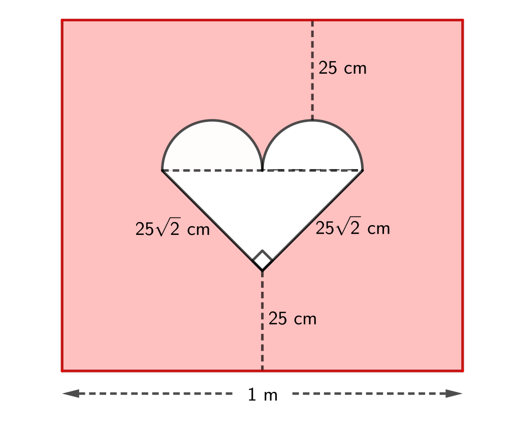
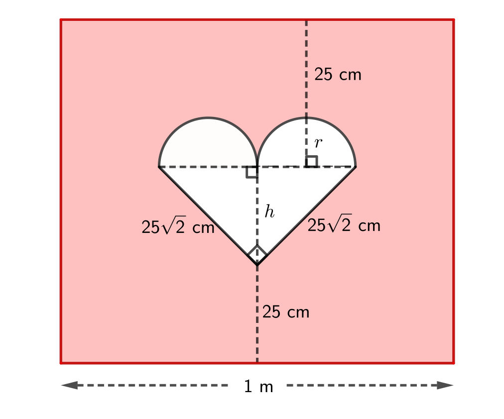
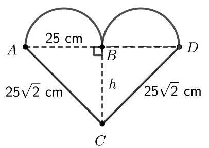

Problem of the Week
Problem E and Solution
Cupid’s Arrow
Problem
At a Valentine’s dance, contestants can participate in a game. They are blindfolded and spun around. They then try to place an arrow on a white heart on a red gameboard. (See the diagram below.) The heart was constructed by attaching two white semi-circles onto the hypotenuse of an isosceles right-angled triangle. Each semi-circle has the same diameter, equal to half the length of the hypotenuse. The heart was then pasted onto a large rectangular sheet of red paper such that the hypotenuse of the triangle is parallel to the base of the rectangle. We know the following measurements:
The distance from the top of a semi-circle to the top of the rectangle is 25 cm.
The distance from the bottom vertex of triangle to the bottom of the rectangle is 25 cm.
The length of each equal side of the triangle is \(25{\sqrt 2}\) cm.
The length of the base of the rectangle is 1 m.
(The dashed lines, the length measurements and the right angle symbol will not actually be on the finished gameboard.) If a contestant places their arrow randomly somewhere on the gameboard, what is the probability that it will land on the white heart?

Note: To solve the problem, it may be helpful to use the following fact:
In an isosceles triangle, the line joining the vertex opposite the unequal side to the midpoint of the unequal side will be perpendicular to the unequal side.
Solution
To find the probability of placing the arrow in the white heart, we need to find the area of the heart and the area of the rectangle. We will label a radius of a semi-circle with \(r\) and the distance from the vertex of the right-angled triangle to the midpoint of the hypotenuse with \(h\). Using the helpful fact, we know that this line will be perpendicular to the hypotenuse. Therefore, the height of the rectangle is \(25 + r + h + 25\).
We now need to find the values of \(r\) and \(h\).

We will first find the value of \(r\).
In the right-angled triangle, we know the the two equal sides are \(25\sqrt{2}\) and the hypotenuse is equal to the sum of the two diameters of the semi-circles, which is \(4r\).
Since the triangle is a right-angled triangle, we can use the Pythagorean Theorem to find the value of \(r\). \[\begin{aligned}
(4r)^2&=(25{\sqrt 2})^2 + (25{\sqrt 2})^2\\
16r^2&=1250 + 1250\\
16r^2&=2500\\
r^2&= 156.25\\
r &= 12.5\\\end{aligned}\]
We can now find \(h\).
Let’s look at the heart. We will label the original triangle \(\triangle ADC\) and let \(B\) be the midpoint of \(AD\).

From above, we know that \(\angle ABC = 90^\circ\). We also know \(AC=25\sqrt{2}\), \(AB= 2r = 25\), and \(BC=h\).
Since \(\triangle ABC\) is a right-angled triangle, we can use the Pythagorean Theorem to find the value of \(h\).
\[\begin{aligned} h^2&= (25\sqrt 2)^2 - 25^2\\ h^2&=1250-625\\ h^2&=625\\ h&=25, \text{ since } h>0\end{aligned}\]
We can now find the area of the rectangle and the area of the heart.
For the rectangle, the base is 1 m or 100 cm.
The height is \(25 + r + h + 25 = 25 + 12.5 + 25 + 25 = 87.5\) cm.
Therefore, the area of the rectangle is \(100(87.5)=8750\mbox{ cm}^2\).
For the heart, the area is the total of the area of the two semi-circles plus the area of \(\triangle ADC\). The two semi-circles make up a circle of radius 12.5 cm. For \(\triangle ADC\), the base is \(AD= 4r = 50\) and the height is \(h=25\).
Therefore, the area of the heart is \(\pi (12.5)^2 + \dfrac{(50)(25)}{2} = (156.25\pi + 625)\) cm\(^2\).
Therefore, the probability that the arrow will land on the white heart is \[\dfrac{\text{area of heart}}{\text{area of rectangle}}= \dfrac{156.25\pi + 625}{8750} \approx 0.13\]